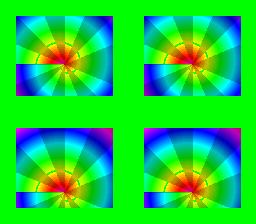

|
OpenSNES
Modern Open-Source SNES Development SDK
|
|
OpenSNES
Modern Open-Source SNES Development SDK
|

Port of krom (Peter Lemon)'s WindowMultiHDMA demo (PeterLemon/SNES, PPU/Window/WindowMultiHDMA). One HDMA channel in 4-register mode streams WH0-WH3 ($2126-$2129) — both windows' left AND right edges — per scanline band, cutting a 2×2 grid of portholes into BG1. The green backdrop shows wherever the combined mask disables the layer; the D-pad scrolls the ring artwork behind the fixed portholes. hdmaWindowShape covers a single window; this is the two-window composition the arc audit flagged.
Window algebra (krom's exact setup): W1 and W2 both enabled on BG1 and both inverted, combined with AND — masked where (outside W1) AND (outside W2) = visible inside either window.
The table is krom's exact 14-band data (in main.c); the artwork is original (procedural radial color wheel, tiled 2×2 so gfx4snes dedups it into 16 KB of tiles).
| Register | krom | this port |
|---|---|---|
| BGMODE | $0B (Mode 3, priority) | same (setMode(BG_MODE3, 0x08)) |
| W12SEL | $0F (W1+W2 on BG1, inverted) | same (windowEnable+windowSetInvert ×2) |
| WBGLOG | $01 (BG1 = AND) | same (windowSetLogic(WINDOW_BG1, WINDOW_LOGIC_AND)) |
| TMW | $01 | same (windowSetMainMask(WINDOW_BG1)) |
| DMAP0/BBAD0 | %100 / $26 | same (hdmaSetup(ch0, HDMA_MODE_4REG, HDMA_DEST_WH0, …)) |
| HDMA table | 14 bands of 16 lines | krom's exact bytes (see main.c) |
| Backdrop | green (CGRAM 0) | same (setColor(0, RGB(0,31,0))) |
console, dma, background, hdma, window, input